A read-only observability layer for the IBM Advanced Job Scheduler (AJS) on
IBM i / AS/400 — Spring Boot, Thymeleaf, jt400 JDBC over the
QUSRIJS physical files, with JWT authentication and a SQLite
administration store.
Version 0.1.0-SNAPSHOTJava 21 LTSSpring Boot 3.5.16Tests 118 passing
What this is, and what it is not
Everything in this document was produced by running the application. The
screenshots are real captures of the real pages, taken through the real
sign-in flow. That said, the AJS data shown is a fabricated
fixture, because no IBM i partition was available — so it demonstrates
the application, not any particular scheduler. See
What remains unverified for the four checks that need a live system.
Sample run
The application runs fully without an IBM i by using an H2 fixture in DB2
compatibility mode standing in for QUSRIJS. The local
profile is guarded and will not start without an explicit opt-in, so fabricated
data cannot be mistaken for real scheduler state.
Start
$ ./gradlew bootRun --args='--spring.profiles.active=local'
...
WARN Running with the 'local' profile: the dashboard is showing FABRICATED AJS
data held in memory. Do not treat anything on screen as real scheduler state.
INFO Tomcat started on port 8080 (http) with context path '/'
INFO Started AjsObservabilityApplication in 2.987 seconds
INFO AuthBootstrap - Registered application: Overview (overview)
INFO AuthBootstrap - Registered application: Jobs due (calendar)
INFO AuthBootstrap - Registered application: Failures (failures)
INFO AuthBootstrap - Registered application: Job inventory (jobs)
INFO AuthBootstrap - Registered application: Needs attention (attention)
INFO AuthBootstrap - Bootstrap administrator created for admin@localhost
On first start the application registers its five dashboards as apps — so each
can be granted or denied per user — and creates one administrator. If no
bootstrap password is configured, a random one is generated and logged
once, because a fixed default password is how such accounts
reach production unchanged.
Observed HTTP behaviour
$ # an anonymous request is refused
$ curl -i localhost:8080/overview -> 401
$ # sign in; the JWT arrives as an HttpOnly cookie
$ curl -c jar -d 'email=admin@localhost&password=localdev1234' \
localhost:8080/auth/sign-in -> 302
$ # now the dashboards render
$ curl -b jar localhost:8080/overview -> 200 (9250 bytes)
$ curl -b jar localhost:8080/failures -> 200 (9416 bytes)
$ curl -b jar localhost:8080/jobs -> 200 (13954 bytes)
$ curl -b jar localhost:8080/attention -> 200 (9680 bytes)
$ # overview counters, read out of the returned HTML
$ curl -b jar localhost:8080/overview | grep -o '
[0-9]*'
8 7 1 0 1 2 1
^ ^ ^ ^ ^ ^ ^
| | | | | | +-- no next run
| | | | | +----- never run
| | | | +-------- genuine failures
| | | +----------- due today
| | +-------------- held (*HELD)
| +----------------- ready (*READY)
+-------------------- job definitions
Reading those counters is a useful sanity check on the domain rules. There are
8 jobs, of which 7 are ready and 1 held. Two
jobs have an abnormal completion code, yet genuine failures is
1 — because the second carries recovery action *NOSBM,
meaning AJS skipped it rather than the job failing. Flagging that as a failure
would be a false alarm, and false alarms destroy trust in a monitoring tool
faster than missing a real failure.
Authentication
JWTHS256, 24h, HttpOnly cookie
bcrypt$2a$10$, cost 10
2roles: user, admin
SQLiteauth store, separate from IBM i
Auth is held in a separate SQLite database, deliberately not
bound to the IBM i connection. If the two were merged, an iSeries outage would
lock operators out of the very tool they use to diagnose that outage. The
application can therefore authenticate, render sign-in and be administered even
when the host is unreachable.
Sign in
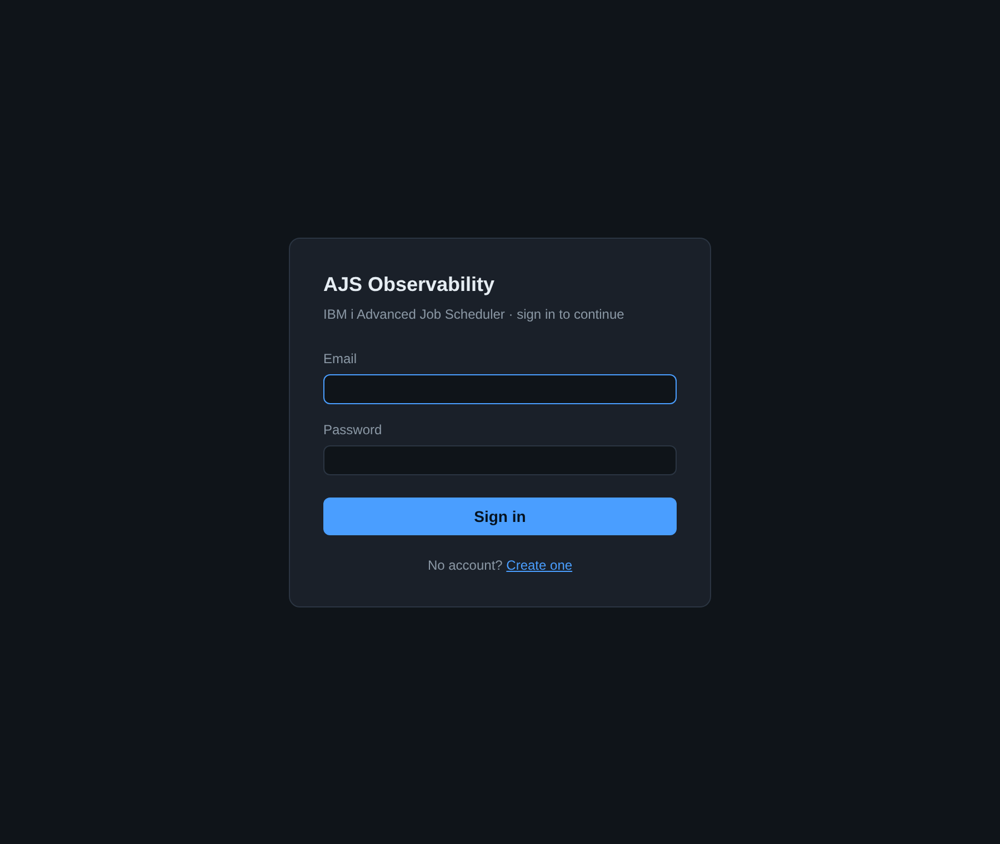
Figure 1 — Sign-in. Standalone page with no navigation, since
everything behind it requires a session. Errors are shown inline and preserve
what was typed.
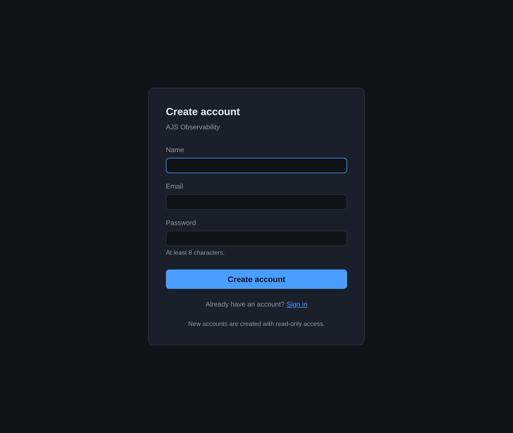
Figure 2 — Self-service sign-up. Always creates an ordinary
user. There is no path from this form to an administrator account; only the
admin UI can grant that.
Dashboards
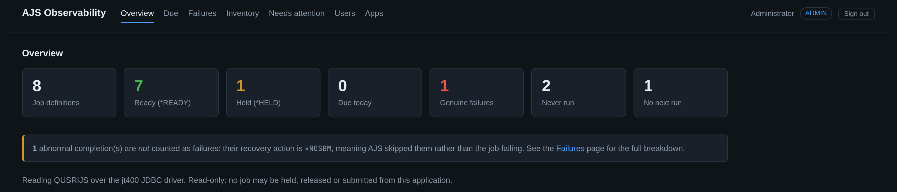
Figure 3 — Overview. Headline counters for the partition. The
amber note explains the gap between raw abnormal completions and the genuine
failure count, so the numbers can be reconciled without reading SQL. Note the
Users and Apps links in the navigation, and the
Administrator / ADMIN identity at top right.
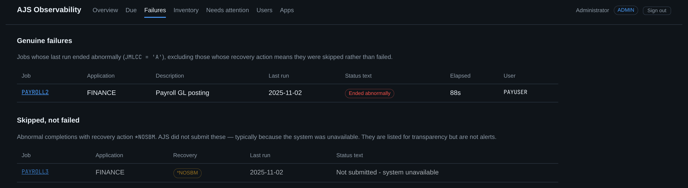
Figure 4 — Failures. Split into two tables that must not be
conflated. Genuine failures (PAYROLL2, 88s elapsed) are alerts.
Skipped, not failed (PAYROLL3, *NOSBM) were not submitted
by AJS — typically because the system was unavailable — and are listed for
transparency but are not alerts.
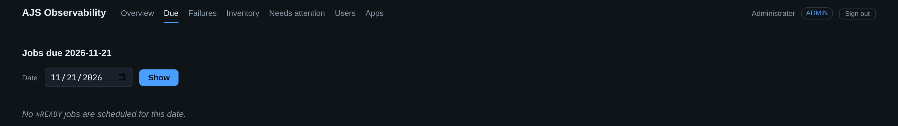
Figure 5 — Jobs due. Schedules for a chosen date, defaulting
to today. A malformed date shows a warning rather than a 400 error page, since
on a monitoring tool that would be a support call rather than a helpful error.
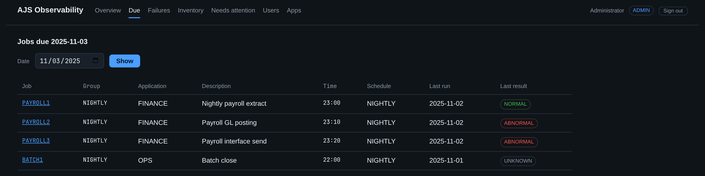
Figure 6 — Jobs due on a specific date. The last-result column
is derived from the completion code, so N/A is never
shown raw.
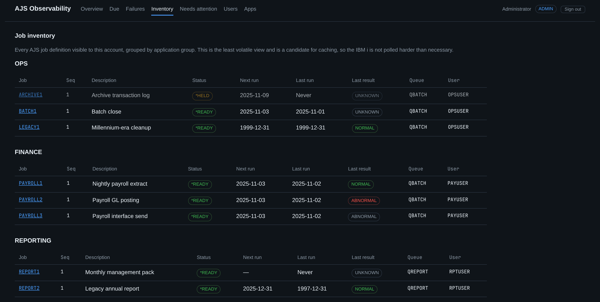
Figure 7 — Inventory. Every AJS job definition visible to the
account, grouped by application group. The least volatile view, and the natural
candidate for caching so the host is not polled harder than necessary.
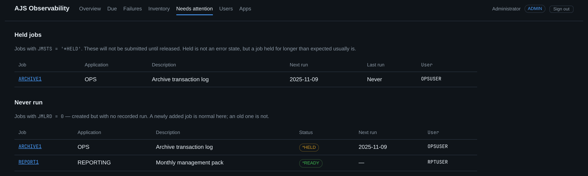
Figure 8 — Needs attention. Held jobs (*HELD) and
jobs that have never run (JMLRD = 0). Held is not an error state,
but a job held longer than expected usually is.
Job detail, and the legacy-date handling
AJS stores dates in packed legacy formats with sentinel values, and a naive cast
raises SQL0181 / CPD4019. All decoding is centralised in one tested class, and
the pages name the sentinel rather than rendering a meaningless date.
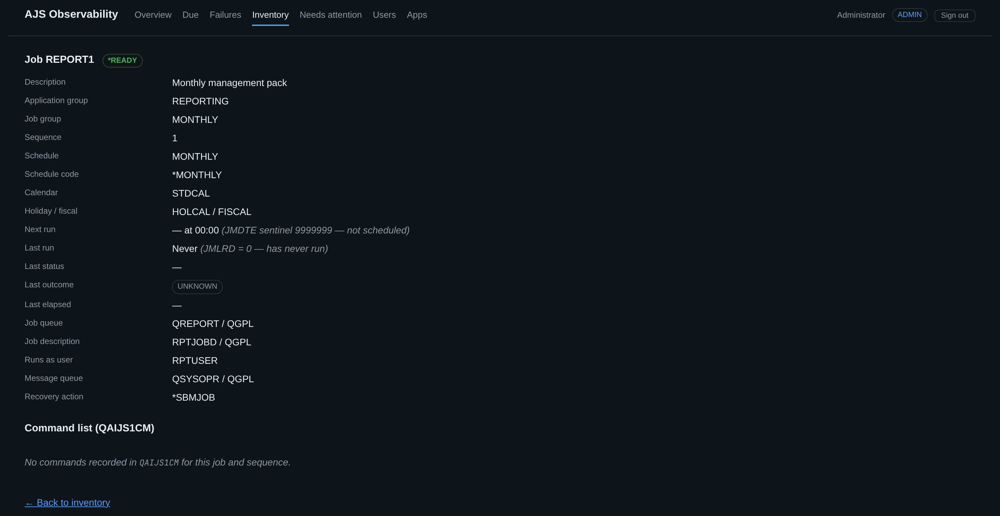
Figure 9 — Task with no scheduled next run.JMDTE
holds the sentinel 9999999, which is surfaced as
“(JMDTE sentinel 9999999 — not scheduled)” rather than being cast to a
date, and JMLRD = 0 renders as “Never”.
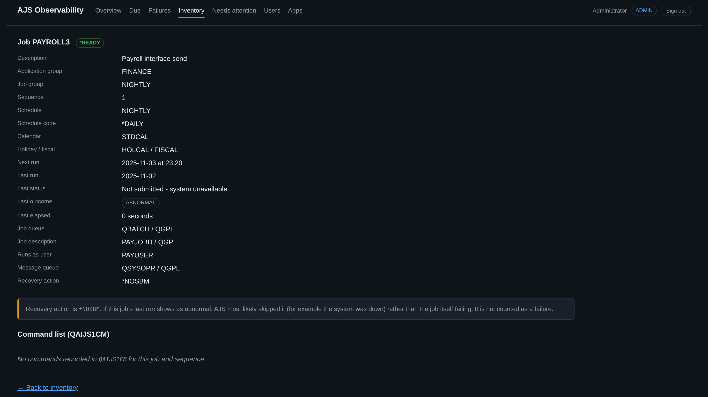
Figure 10 — Recovery action explained in context. The
*NOSBM recovery action triggers an explicit note that the abnormal
completion is most likely a skip, not a failure.
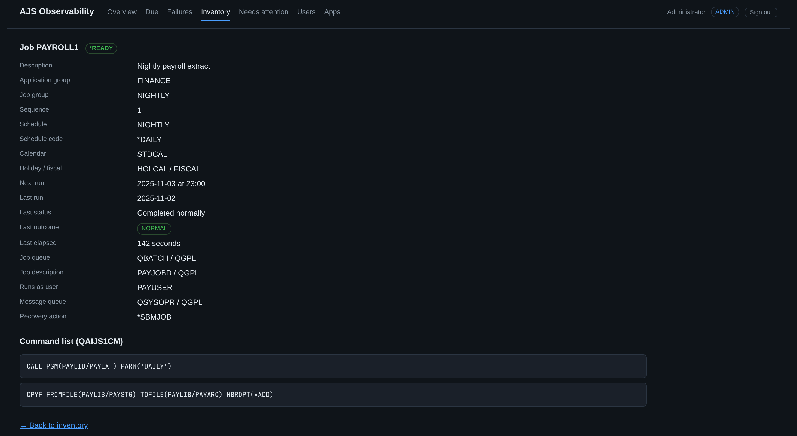
Figure 11 — Task definition and command list. Definition fields
are mapped straight from QAIJSMST and the command list from
QAIJS1CM (joined on CMJOB = JMJOB). Fixed-width
character columns arrive blank-padded from IBM i, so padding is stripped at the
repository boundary rather than leaking into the display or a CSV export.
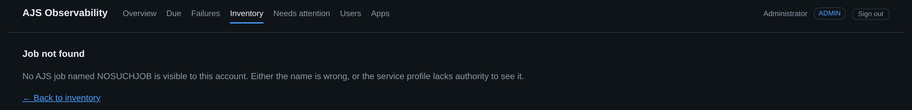
Figure 12 — Unknown job. A helpful page rather than a stack
trace, and it distinguishes “no such job” from “your profile lacks authority to
see it”, which are the two real causes.
Administration
Administration mirrors the reference implementation in my-dashboard:
the same table shapes, the same bcrypt algorithm (so a password hash can move
between the two without a reset) and the same permission model.
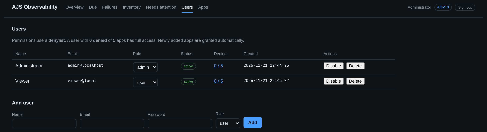
Figure 13 — Users. Create accounts, change roles, enable or
disable, and open per-user permissions. Disabling takes effect on the target's
next request, not when their 24-hour token expires, because the
account is re-read from the database every request.
The permission model is a denylist — this is the easiest thing to misread
A row in user_applications means the user cannot
access that app. No rows means full access, and a newly added
app is granted to everyone automatically because nobody holds a deny row for
it yet. Inverting this turns “restrict one app” into “revoke everything”.
That is why the page says “0 denied of 5” rather than “0 granted”, and
why the checkbox is labelled Denied.
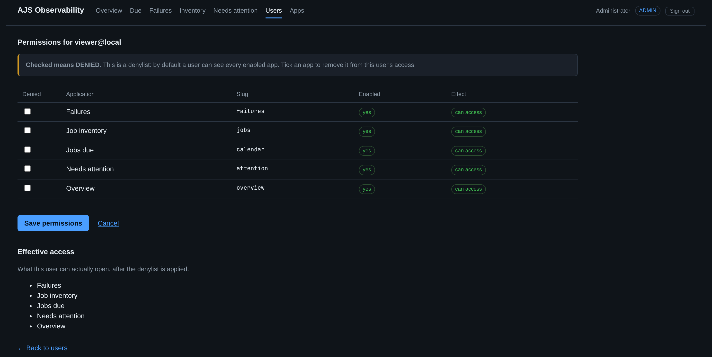
Figure 14 — Per-user permissions. Checked means
denied. The page states the direction explicitly, shows the current
effect per app, and lists the resulting effective access so the outcome is
visible before saving.
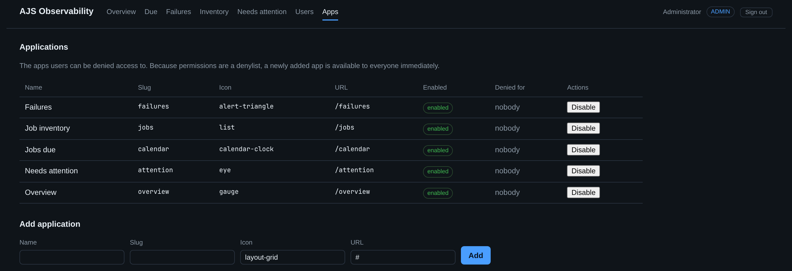
Figure 15 — Application registry. The apps users can be denied.
The Denied for column names the users holding a deny row, so a
restriction is never invisible from the app's own page.
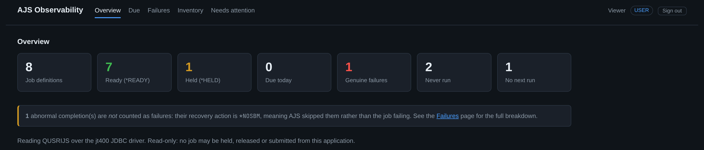
Figure 16 — The same dashboard as an ordinary user. Compare
with Figure 3: the identity reads Viewer / USER, and the
Users and Apps links are absent. Navigation is rendered from
the database-backed authority, so a demoted administrator loses those links on
their next request.
Security properties, each verified against the running application
Property
Verified result
Anonymous dashboard access
302 → /sign-in (browser), 401 (API client)
Valid session cookie
200, identity and role shown in navigation
Denied app route
403 in the same session; other routes unaffected
Denied app sub-path (/jobs/PAYROLL1)
403 — cannot be bypassed by navigating deeper
Cookie for a disabled user
401 on the very next request
Cookie for a deleted user
401 on the very next request
Demoted administrator
403 on the very next request
Ordinary user → /admin/**
403
Self-disable / self-demote
Refused, with an explanatory message
Disabling the last administrator
Refused — prevents an unrecoverable lockout
Public sign-up
Creates USER only; no path to admin
Token with characters appended to its signature
401 — rejected (see below)
A real JWT vulnerability, found and fixed
Appending a character to a valid token's signature was accepted
by jjwt 0.12.6. This was measured, not theorised: jjwt base64url-decodes
the signature before comparing it, and the trailing character contributes only
padding bits, which are discarded — so the same signature bytes result and
verification succeeds.
JwtService now requires every segment to be canonical: valid
base64url that round-trips exactly through decode→encode. A segment carrying
discarded padding bits cannot round-trip, so it is rejected. Appending
x now returns 401. Flipping a signature character and forging a
payload were already rejected by the signature check; this closed the remaining
gap, and a test pins it.
The token is not authoritative
The JWT carries the role so gating is cheap, but it is not
trusted. Every request re-reads the user from SQLite, rejects a missing
or disabled account, and builds authorities from the database role.
That is precisely why disabling or demoting takes effect immediately instead of
whenever the 24-hour token happens to expire.
Two security-relevant near-misses worth recording
1. MockMvc was not installing the security filter chain. With
the default test setup, unauthenticated requests returned 200
in tests while the running application correctly returned 401. “The gate is
closed” was being asserted against a harness that had no gate. It was caught
only because the live application was smoke-tested over real HTTP. The tests now
build MockMvc with the Spring Security configurer explicitly, and a separate
test asserts the filter chain exists in the context.
2. The denylist was stored but not enforced. The admin UI saved
and displayed “no access” for an app, and the user could open it anyway. A
restriction that is recorded but not applied is worse than no restriction,
because it reads as a working control. An interceptor now enforces it, covering
sub-paths and exempting sign-in and administration routes so a misconfiguration
cannot lock everyone out.
Test suite
118 tests, 0 failures on a forced --rerun-tasks run.
All of them run offline — no IBM i, no Docker, no network.
CYYMMDD century flag misread — 1991231 is 2099, not 1999
Dates shown 100 years off, with no error
QAIJS1CM filtered on CMSEQ = JMSEQ
Job showed 1 of 2 commands; the rest of the sequence invisible
Fixed-width CHAR columns not trimmed
200 characters of padding in the UI and in CSV exports
What remains unverified
The AJS fixture is authored, not extracted from a real system.
Passing tests therefore prove the application, not the accuracy of the schema or
the encodings. This is the honest boundary of everything above, and it is the
single highest-value thing to resolve next: a read-only afternoon on one real
partition retires four of the eight recorded risks.
Risk
Question
How to settle it
R1
Do QAIJSMST / QAIJSHST / QAIJS1CM
actually have these columns? IBM documents them in support notes, not as a
supported contract.
Run DSPFFD on each file and diff against
fixture/schema-ajs.sql.
R2
Do the real CYYMMDD/YYMMDD encodings and the
9999999 / 0 sentinels behave as assumed on this
release?
Query a known job whose date is documented, and compare.
R4
Is QSYS2.ACTIVE_JOB_INFO present at the installed PTF level?
Needed for the live “running now” view.
SELECT * FROM QSYS2.ACTIVE_JOB_INFO() LIMIT 1
R5
Does the jt400 DRDA path work end to end from the application server?
Start with ajs.schema-validation.enabled=true; it logs exactly
which expected columns are missing.
Also outstanding before any real deployment
TLS. The session cookie is set with secure=false
because local development is plain HTTP. This must be flipped to
true behind HTTPS or the token travels in clear text.
CSRF is disabled, inherited from the reference implementation;
protection rests on SameSite=Lax cookies. The AJS side is
read-only, but user administration is not, so this must be revisited if write
endpoints are added.
Sign-in reveals whether an email exists (“no account found”
versus “incorrect password”), matching the reference so users get actionable
errors. That permits account enumeration and should be collapsed before the
application faces the public internet.
JWT_SECRET must be set in every real deployment.
There is no usable default: the service refuses to start on a blank or
shorter-than-32-byte secret, because a guessable secret makes every session
token forgeable.
Cross-compatibility with my-dashboard is believed but not
tested. The bcrypt formats and column names match, but no test moves a
row between the two databases. If sharing a user store is intended, that needs
an explicit verification.
Jar composition, verified
The production jar contains jt400, SQLite, Spring Security and jjwt, and
0 H2 entries. H2 is scoped to a dedicated
localRuntimeOnly configuration, so the shipped artifact can only
talk to a real IBM i.